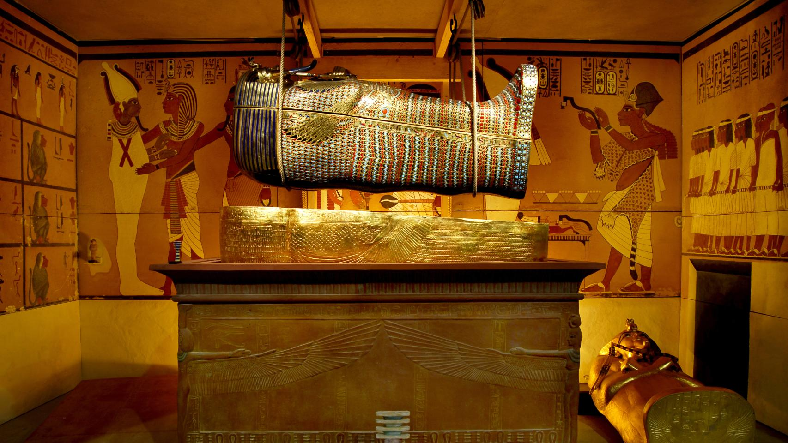

Historia del Arte
Objetivos
- Arte de las civilizaciones antiguas: Egipto, Grecia y Roma.
Contenido:
El arte de las civilizaciones antiguas, como Egipto, Grecia y Roma, es una ventana a las culturas y sociedades que florecieron en la antigüedad. Cada una de estas civilizaciones dejó un legado artístico distintivo que ha influido en la historia del arte y la arquitectura.
Arte del Antiguo Egipto
Características y Temas
Simbología y Religión: El arte egipcio está profundamente entrelazado con la religión y la mitología. Los faraones y dioses son representados con simbolismo que refleja sus atributos divinos y poderes.
Estilo y Proporciones: El arte egipcio es conocido por su estilo altamente estilizado y rígido. Las figuras humanas se representan de manera jerárquica, con proporciones que indican el estatus social.
Faraones y Dioses: Las estatuas y relieves de faraones y dioses son comunes, con una clara intención de mostrar poder y divinidad. El faraón a menudo se representa en una postura idealizada y eterna.
Monumentos y Ejemplos
Pirámides y Templos: Las pirámides de Giza y templos como Karnak y Luxor son ejemplos icónicos de la arquitectura egipcia. Los templos están adornados con relieves y esculturas que narran historias de dioses y faraones.
 Tumbas y Relieves: Las tumbas, como la de Tutankamón, están ricamente decoradas con pinturas y relieves que representan la vida después de la muerte y escenas de la vida cotidiana.
Arte de la Antigua Grecia
Características y Temas
Humanismo y Naturalismo: El arte griego se centra en la representación naturalista y humanista de la figura humana. Los griegos buscaban capturar la belleza ideal y la perfección física.
Mitología y Héroes: Las obras de arte griegas a menudo representan escenas mitológicas y héroes legendarios. Estas historias reflejan los valores y creencias de la sociedad griega.
Proporción y Equilibrio: Los artistas griegos desarrollaron el canon de proporciones y buscaron el equilibrio y la armonía en sus obras.
Monumentos y Ejemplos
Escultura: : Escultores como Fidias y Praxíteles crearon estatuas que representan dioses y atletas en poses dinámicas y realistas, como el Discóbolo de Mirón y el Hermes de Praxíteles.
 Arquitectura: Los templos griegos, como el Partenón en Atenas, son ejemplos de arquitectura clásica. Estos edificios muestran el uso de órdenes arquitectónicos (dórico, jónico y corintio) y la búsqueda de la perfección en el diseño.
Arquitectura: Los templos griegos, como el Partenón en Atenas, son ejemplos de arquitectura clásica. Estos edificios muestran el uso de órdenes arquitectónicos (dórico, jónico y corintio) y la búsqueda de la perfección en el diseño.
Cerámica: La cerámica griega, decorada con escenas mitológicas y de la vida cotidiana, es un testimonio importante de la habilidad técnica y el estilo narrativo de los artistas griegos.
Arte de la Antigua Roma
Características y Temas
Realismo y Detalle: El arte romano es conocido por su realismo y atención al detalle. Los retratos romanos buscan capturar la individualidad y el carácter de las personas.
Propaganda y Poder: El arte romano a menudo tiene un propósito propagandístico, glorificando a los emperadores y sus logros. Los monumentos conmemorativos, como arcos de triunfo y columnas, son comunes.
Ingeniería y Arquitectura: La arquitectura romana muestra una notable habilidad en ingeniería y construcción. Los romanos desarrollaron el uso del arco, la bóveda y el hormigón, lo que les permitió crear estructuras grandiosas
Monumentos y Ejemplos
 Arquitectura: Monumentos como el Coliseo, el Panteón y los acueductos son ejemplos de la habilidad romana en la arquitectura. Estos edificios muestran la combinación de funcionalidad y estética.
Arquitectura: Monumentos como el Coliseo, el Panteón y los acueductos son ejemplos de la habilidad romana en la arquitectura. Estos edificios muestran la combinación de funcionalidad y estética.
Escultura y Relieves: Los retratos de emperadores, como los de Augusto y Trajano, y los relieves narrativos, como los de la Columna de Trajano, son ejemplos del realismo y la narrativa en el arte romano.
Mosaicos y Pintura: Los mosaicos romanos, como los de Pompeya, muestran escenas de la vida cotidiana, mitología y naturaleza, con un alto nivel de detalle y color.
Conclusión
El arte de Egipto, Grecia y Roma no solo refleja las creencias, valores y logros de estas civilizaciones, sino que también ha dejado un legado duradero que ha influido en la historia del arte occidental. Cada una de estas culturas aportó una visión única y una técnica distintiva que continúa siendo estudiada y admirada hoy en día.